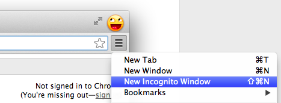
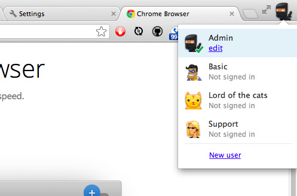
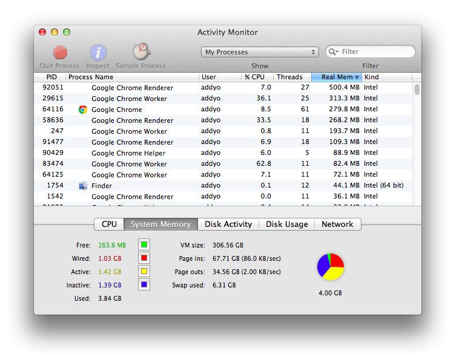

Option 1: Use Incognito mode. Open the Chrome menu
 and select New Incognito Window, or launch
Chrome with the
and select New Incognito Window, or launch
Chrome with the --incognitoswitch.
Option 2: Use a fresh Chrome profile. Click the user icon in the top-right corner of your Chrome window and select New User.

To guarantee a clean profile doesn't inherit any extensions or settings, launch Chrome using the
--user-data-dirswitch with the path'/dev/null'. e.g:- OSX:
open -a "Google Chrome" --args --user-data-dir=/dev/null - Linux:
google-chrome --user-data-dir=/dev/null - Windows:
"C:\Users\username\AppData\Local\Google\Chrome\Application\chrome.exe" --user-data-dir=/dev/null
Launching Chrome like this will ensure you get a completely empty profile instead of loading the user's profile as read-only.
- OSX:
- Close other tabs and processes/applications that may be running in the background. If these apps need to run in the background, use your system monitor to ensure apps are not utilizing too much CPU or RAM. 
- Disable any Dynamic CPU overclocking that may be enabled on your system.
- Make sure you are up-to-date with the latest build of Chrome. You can use http://download-chromium.appspot.com to grab an edge build.
- If you are running into a bug and generally use Chrome Canary as your development browser, it is worth testing in Chrome Stable to ensure the issue is unrelated to new features or bugs.